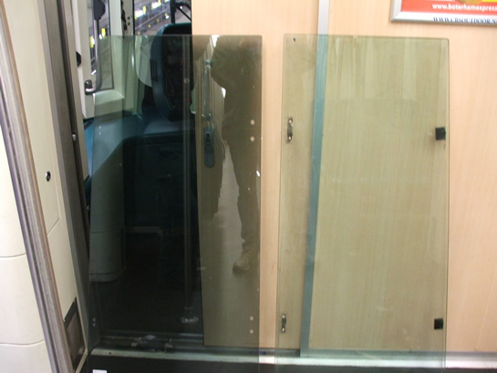
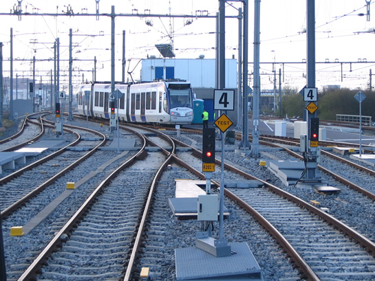
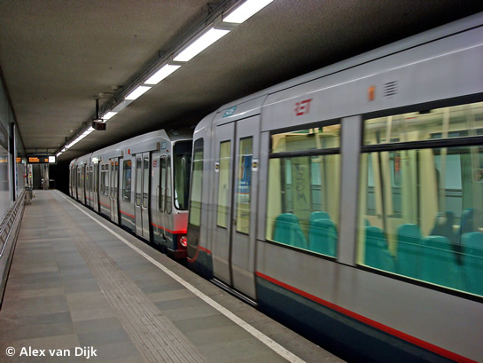
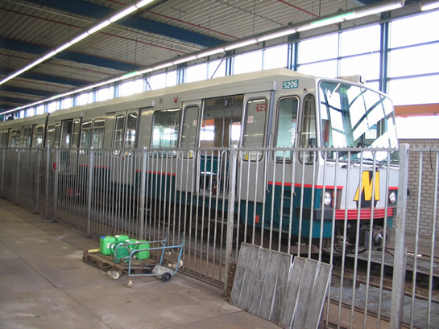
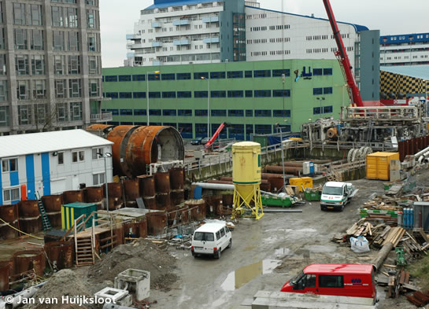
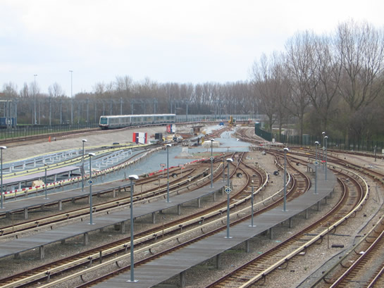
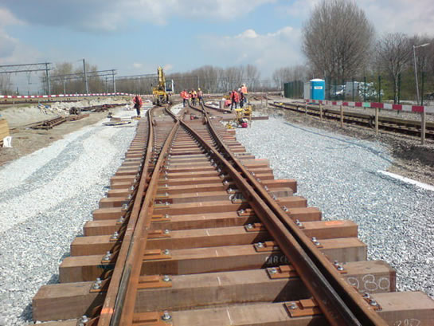
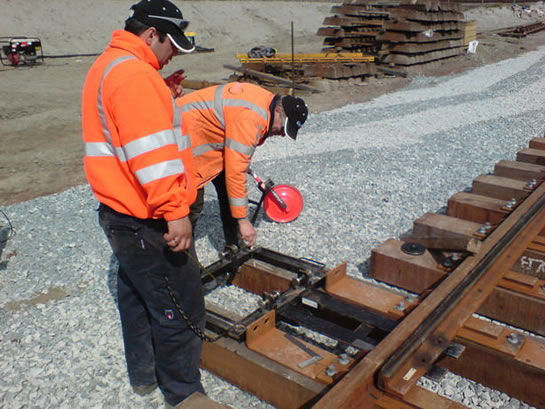
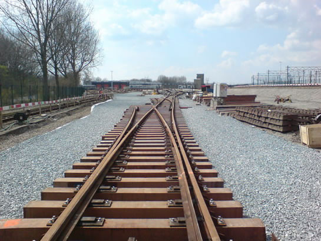
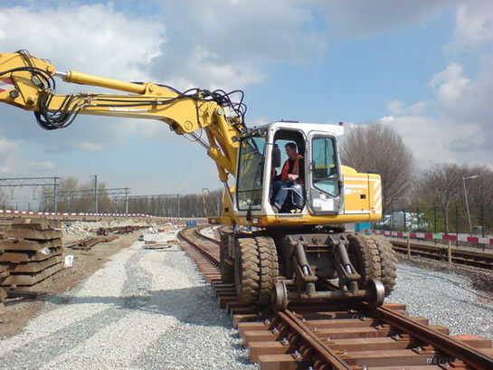

RandstadRail Erasmuslijn gedeeltelijk buiten dienst en meer...
- zondag 30 november 2008 21:59
- Geschreven door Joachim
Van 26 april tot en met 4 mei aanstaande is er geen metroverkeer mogelijk op de RandstadRail Erasmuslijn tussen de stations Hofplein en Pijnacker Zuid. Er worden vervangende bussen ingezet. Het spoor wordt buiten dienst gesteld in verband met spoorwerkzaamheden en de aanleg van bijbehorende infrastructuur. Ook zullen de laatste werkzaamheden uitgevoerd worden aan het nieuwe station Rodenrijs. Dit station zal op maandag 5 mei in de dienstregeling opgenomen worden. Het tijdelijke station Rodenrijs, dat iets noordelijker gelegen is, zal dan verwijderd worden.
Zonwerende folie
Na een geslaagde proef worden dit weekeinde 10 rijtuigen van het type SG2/1 (5401-5418) voorzien van zonwerende folie op de cabineruiten. Het gaat om de zijruiten. In de overige acht rijtuigen en de rijtuigen van het type MG2/1 (5301-5363) worden deze ruiten de aankomende weken ook vervangen.

Verschil tussen een met (links) en zonder (rechts) zonwerende folie behandelde zijruit.
Stopmachine
De afgelopen week is een stopmachine actief geweest op delen van de Calandlijn. Een stopmachine brengt computergestuurd de metrobaan op niveau, waardoor de metrotreinen met een soepele loop over het spoor bewegen. De metrobaan tussen de stations Kralingse Zoom en Capelsebrug v.v. werd "gestopt", evenals de aardenbaan ten oosten van station De Tochten.
Marathon 2008
Tijdens de Marathon van Rotterdam, vorige week zondag, werden op de drukkere momenten extra metrotreinen ingezet. Dit was alleen het geval op de Erasmuslijn, waar de extra wagendiensten 999, 998 en 997 (bestaande uit vierwagentreinen van de serie 5300) ingezet werden. De gehele dag reden er op de Erasmuslijn vierwagentreinen en op de Calandlijn driewagentreinen.
Overigens werd er tot in de loop van de ochtend onregelmatig gereden op de RandstadRail Erasmuslijn. Doordat HTM-tram 4046 ontspoorde op het emplacement van de remise Leidschendam, blokkeerde deze de sporen 203 t/m 206, waardoor de metrorijtuigen van de RandstadRail Erasmuslijn niet konden uitrukken. De enige tweewagentrein die het emplacement reeds verlaten had, werd gesplitst om de vertragingen zo veel mogelijk te beperken.

Tramrijtuig 4046 ontspoorde op het emplacement Leidschendam, waardoor rijtuigen van de RandstadRail Erasmuslijn "opgesloten" werden.
5260 & 5206
Rijtuig 5260 is na een technische revisie, die uitgevoerd werd in de lijnwerkplaats Waalhaven, onlangs weer in dienst genomen. Op dinsdagavond 8 april werd het metrorijtuig door drie Bombardier-rijtuigen, waaronder rijtuig 5416, teruggebracht naar de remise 's-Gravenweg. Momenteel ondergaat rijtuig 5206 een technische revisie.

Rijtuig 5260 wordt met diverse trekkrachten, waaronder rijtuig 5416, teruggebracht naar de remise 's-Gravenweg. Station Leuvehaven, 8 april 2008.

Het volgende revisierijtuig 5206 in de remise Waalhaven, op het wasspoor 132.
RSG3-rijtuigen
De aflevering van de eerste RSG3-rijtuigen is vertraagd. Er zijn een aantal restpunten geconstateerd die eerst opgelost dienen te worden door Bombardier Transportation, voordat overgegaan kan worden tot voortzetting van de zogenaamde "typetest" in Rotterdam. Het is nog niet bekend wanneer de eerste rijtuigen naar Rotterdam overgebracht worden.
Aanrijding Hoofdweg
In de nacht van 1 op 2 april botste een personenauto omstreeks 01.10 uur op platte wagen 7013, die voortgeduwd werd door locomotief 6102. Het ongeval gebeurde op de gelijkvloerse kruising Hoofdweg, die voor het autoverkeer niet van AHOB's voorzien is. De bestuurder van de personenauto raakte licht gewond. De platte wagen liep schade op aan de automatische koppeling en de behuizing van de front/sluitlampen. Inmiddels is deze schade hersteld.
5301
Rijtuig 5301 is na de technische midlife-revisie die uitgevoerd werd in de centrale werkplaats Kleiweg, vorige week weer in dienst gesteld op de Erasmuslijn.
5024
De restauratie van het oudste Rotterdamse metrorijtuig 5024 gaat gestaag door. De medewerkers van de werkgroep Metro van stichting RoMeO hebben de afgelopen weken de stroomafnemers gereviseerd. Daarnaast zijn er werkzaamheden aan de binnenzijde van het rijtuig, ter voorbereiding van de opbouw van het nieuwe interieur. Vorderingen zijn te bekijken op de  weblog van de werkgroep Metro.
weblog van de werkgroep Metro.
Tunnelboormachine Pandora
Begin april is de tunnelboormachine Pandora in delen afgevoerd uit de Conradstraat, nabij het Rotterdamse Centraal Station. De tunnelboormachine heeft de afgelopen jaren twee enkelsporige tunnels geboord van 2,4 kilometer, tussen de Conradstraat en de Sint Franciscus-driehoek ter hoogte van de Kleiweg. De tunnel, die de RandstadRail Erasmuslijn aansluit op de Erasmuslijn, wordt momenteel afgebouwd. Het is nog onduidelijk wanneer de tunnel in gebruik genomen wordt. De RET wil de tunnel in augustus 2009 in gebruik nemen, hoewel wethouder Baljeu uitgaat van begin 2010. De oorzaak ligt in het verloop van de bouwwerkzaamheden van het nieuwe Rotterdam Centraal.

De aankomstlocatie in de Conradstraat. Aan de linkerzijde staan diverse onderdelen van de tunnelboormachine.
Emplacement Waalhaven
De verlengde opstelsporen aan de oostzijde van emplacement Waalhaven krijgen steeds meer vorm. Inmiddels zijn er weer diverse wissels en nieuwe sporen aangelegd. Begin augustus moeten de werkzaamheden afgerond zijn en moet het opstelterrein weer in gebruik genomen zijn. In verband met de werkzaamheden kan alleen de westzijde van emplacement Waalhaven gebruikt worden, waardoor er door uitrukkende metrotreinen gekeerd wordt achter wisselcomplex Waalhaven II. Daarnaast wordt er opgesteld op het keergebied ten zuiden van station Slinge.

Overzichtsfoto van emplacement Waalhaven, begin april.
Onderstaande foto's met dank aan  Jeepie.nl
Jeepie.nl

Oude wissels worden vervangen door nieuwe. Rechts het incidenteel bereikbare spoor 144.

Voorbereidingen voor het aansluiten van de wisselaandrijving.

De nieuwe sporen worden aangesloten op de nieuwe wissels.

Naast een railshovel rijdt er geregeld een goederenwagon met grind over de sporen.